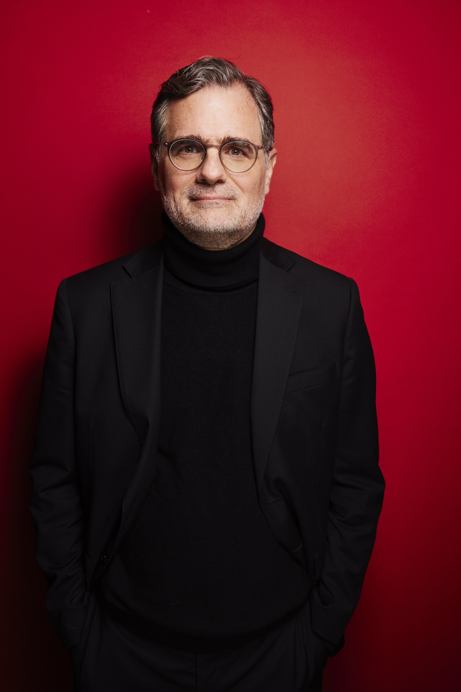
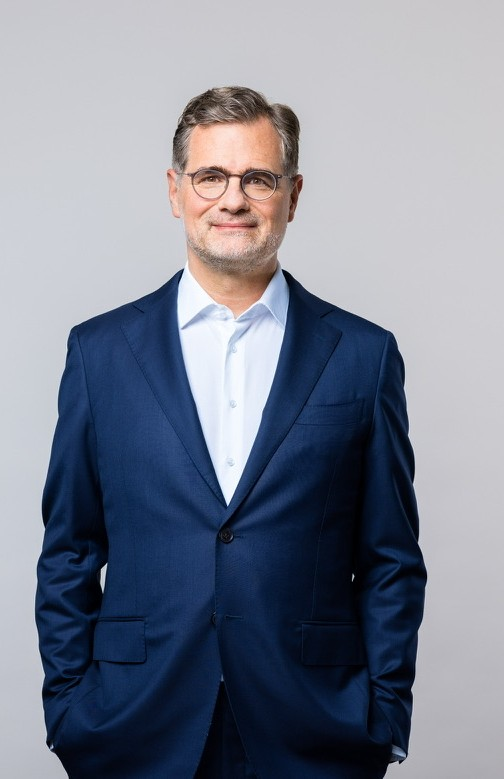

Wolfgang
Schmidt
Bundesminister a.D.

Wolfgang Schmidt gehört zu den erfahrensten Politikstrategen Deutschlands. Mehr als zwei Jahrzehnte hat er Politik auf höchster Ebene gestaltet – in Berlin und Hamburg, in Europa und international. Dabei hat er ein weitreichendes Netzwerk aufgebaut – in der deutschen und internationalen Politik, in Wirtschaft, Wissenschaft, Medien und internationalen Organisationen.
Von 2021 bis Mai 2025 war er als Bundesminister für besondere Aufgaben Chef des Bundeskanzleramts und Beauftragter für die Nachrichtendienste des Bundes. In seine Amtszeit fielen die Unterstützung der von Russland angegriffenen Ukraine sowie zentrale politische Entscheidungen in der Sicherheits-, Energie- und Wirtschaftspolitik in Reaktion auf die „Zeitenwende".
Zuvor war er Staatssekretär im Bundesministerium der Finanzen und G7- und G20-Deputy. Davor war er sieben Jahre Staatsrat und Bevollmächtigter der Freien und Hansestadt Hamburg beim Bund, bei der Europäischen Union und für auswärtige Angelegenheiten.
Der gebürtige Hamburger lebt in Berlin und arbeitet als Berater und Redner zu europäischen und transatlantischen Fragen, zur Wirtschafts-, Finanz- und Sicherheitspolitik sowie zu Strategie- und Entscheidungsprozessen.
Er ist Mitglied des Council des European Council on Foreign Relations (ECFR) und des Kuratoriums der Baden-Badener Unternehmer Gespräche (BBUG).
seit Mai 2025
Vortragstätigkeiten, Diskussionen, Beratung
Dez. 2021 – Mai 2025
Bundesminister für besondere Aufgaben & Chef des Bundeskanzleramtes; Beauftragter für die Nachrichtendienste des Bundes
2018 – 2021
Staatssekretär im Bundesministerium der Finanzen; G7- und G20-Deputy; Alternate Governor der Weltbank
2015 – 2018
Mitglied im Ausschuss der Regionen (AdR)
2014/15
Vorsitzender der Europaministerkonferenz (EMK)
2011 – 2018
Staatsrat und Bevollmächtigter der Freien und Hansestadt Hamburg beim Bund, bei der Europäischen Union und für auswärtige Angelegenheiten
2010 – 2011
Direktor der Internationalen Arbeitsorganisation (ILO) in Berlin
2010
Seminar für Sicherheitspolitik; Bundesakademie für Sicherheitspolitik
2007 – 2009
Leiter des Ministerbüros; Leiter des Leitungs- und Planungsstabes; Bundesministerium für Arbeit und Soziales
2005 – 2007
Büroleiter des 1. Parlamentarischen Geschäftsführers der SPD-Bundestagsfraktion
2002 – 2005
Persönlicher Referent, Büroleiter des SPD-Generalsekretärs; SPD-Parteivorstand
2001 – 2003
Vizepräsident der International Union of Socialist Youth (IUSY), Jugendorganisation der Sozialistischen Internationale
2002
Zweites Juristisches Staatsexamen
2000 – 2002
Rechtsreferendariat am Hanseatischen Oberlandesgericht Hamburg mit Auslandsstation an der Deutschen Botschaft in Mexiko-Stadt
1997 – 2000
Wissenschaftlicher Mitarbeiter am Lehrstuhl Prof. Dr. Peter Behrens, Universität Hamburg, Fachbereich Rechtswissenschaften
1997
Erstes Juristisches Staatsexamen
1991 – 1997
Studium der Rechtswissenschaften an der Universität Hamburg und der Universidad de Deusto (Bilbao, Spanien)
1990
Zivildienst Landesjugendring Hamburg
1989
Eintritt in die SPD
Sozialdemokratische Partei Deutschlands
1970
Geboren in Hamburg

Ich freue mich über Ihre Nachricht. Senden Sie mir gerne eine E-Mail:
Wenn Sie mir eine klassische Sendung zukommen lassen wollen, fragen Sie gerne nach meiner Postanschrift.
Pressefotos

↓ Download · © Bundesregierung/Stefan Kugler

↓ Download · Foto: Julia Steinigeweg

↓ Download · Foto: SPD-Parteivorstand